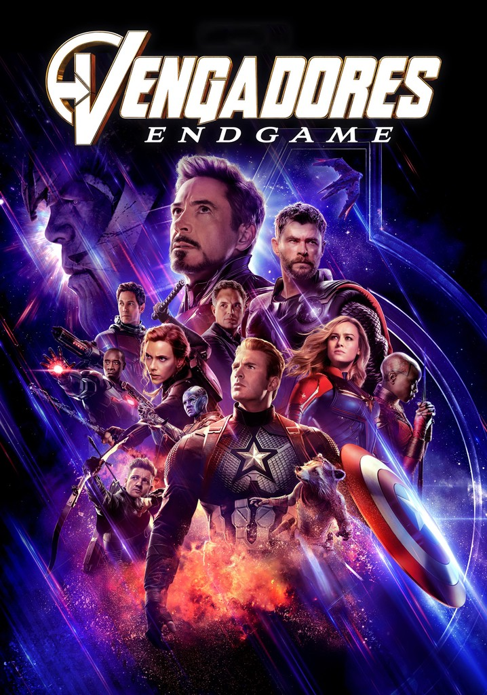

Rapidos y furiosos

-
Sipnosis
Se centra en el oficial de policía de Los Ángeles, Brian O'Conner, quien se infiltra en el mundo de las carreras callejeras para investigar a una banda de asaltantes de camiones que se cree está liderada por Dominic Toretto.
Trailer
-
Soundtrack:
Avengers: Endgame
-
Sipnosis
Tras la devastación causada por Thanos en Avengers: Infinity War, los Vengadores supervivientes, sintiéndose derrotados, se dispersan. Sin embargo, la aparición de Ant-Man, que ha estado atrapado en el Reino Cuántico, les da una nueva esperanza: una forma de revertir el chasquido. La sinopsis oficial de SensaCine describe cómo el equipo, incluyendo a nuevos y viejos aliados, debe reunirse para una última misión para deshacer las acciones de Thanos y restaurar el universo, sin importar las consecuencias.
Trailer
-
Soundtrack:
Transformers 4

-
Sipnosis
Tras la batalla en Chicago, la humanidad teme a todos los Transformers, y una unidad secreta de la CIA, liderada por Harold Attinger, comienza a cazarlos con la ayuda del cazarrecompensas Lockdown. Mientras tanto, un mecánico llamado Cade Yeager descubre que un camión que intenta reparar es en realidad Optimus Prime. Esto los arrastra a una guerra contra los agentes del gobierno y contra una nueva amenaza: la compañía KSI, dirigida por Joshua Joyce, que crea su propio ejército de Transformers usando tecnología de los caídos.
Trailer
-
Soundtrack:
-
- Inception
- The Dark Knight
- Interstellar
- Parasite
- The Shawshank Redemption